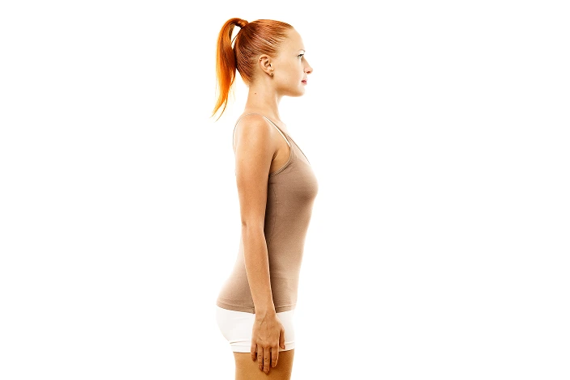

<!DOCTYPE html>
<html lang="en">
<head>
    <meta charset="UTF-8">
    <meta name="viewport" content="width=device-width, initial-scale=1.0">
    <title>Document</title>
    <link rel="stylesheet" href="assets/css/plugins/twentytwenty.css">
</head>
<body>
    
 <!-- Expanding Gallery -->
<!-- <div class="ba-container">
    <div class="ba-wrapper">
        
        
        <div class="ba-handle">
            <span class="ba-icon">⟷</span>
        </div>
    </div>
</div> -->

<!--  -->

    
<style>
.ba-container {
    max-width: 600px;
    margin: 0 auto;
    position: relative;
}

.ba-wrapper {
    position: relative;
    width: 100%;
    overflow: hidden;
    border-radius: 12px;
}

.ba-img {
    width: 100%;
    display: block;
    pointer-events: none;
}

.ba-after {
    position: absolute;
    top: 0;
    left: 0;
    width: 50%; /* Starting split */
    height: 100%;
    overflow: hidden;
    clip-path: inset(0 50% 0 0);
    transition: clip-path 0.1s linear;
}

.ba-handle {
    position: absolute;
    top: 50%;
    left: 50%;
    width: 50px;
    height: 50px;
    transform: translate(-50%, -50%);
    background: #FFD43B;
    border-radius: 50%;
    display: flex;
    align-items: center;
    justify-content: center;
    cursor: ew-resize;
    z-index: 10;
    box-shadow: 0 0 10px rgba(0,0,0,0.2);
    font-weight: bold;
}

.ba-icon {
    font-size: 22px;
}

</style>

<script src="assets/js/plugins/jquery-3.7.1.min.js"></script>
<script src="assets/js/plugins/jquery.twentytwenty.js"></script>
<script src="assets/js/plugins/jquery.event.move.js"></script>

<script>
    				        $(window).on("load", function(){
    $(".twentytwenty-container[data-orientation!='vertical']").twentytwenty({default_offset_pct: 0.5});
    $(".twentytwenty-container[data-orientation='vertical']").twentytwenty({default_offset_pct: 0.3, orientation: 'vertical'});
});
</script>
</body>
</html>